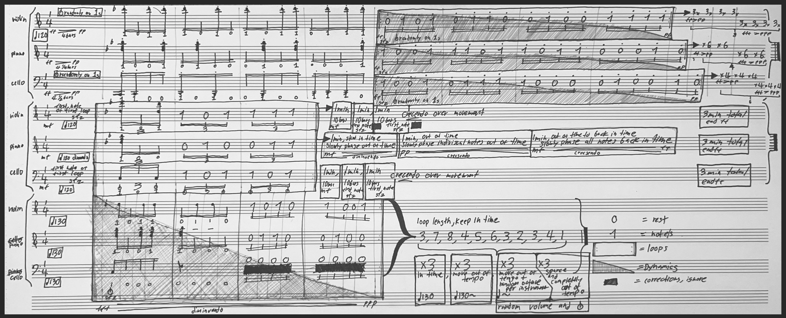
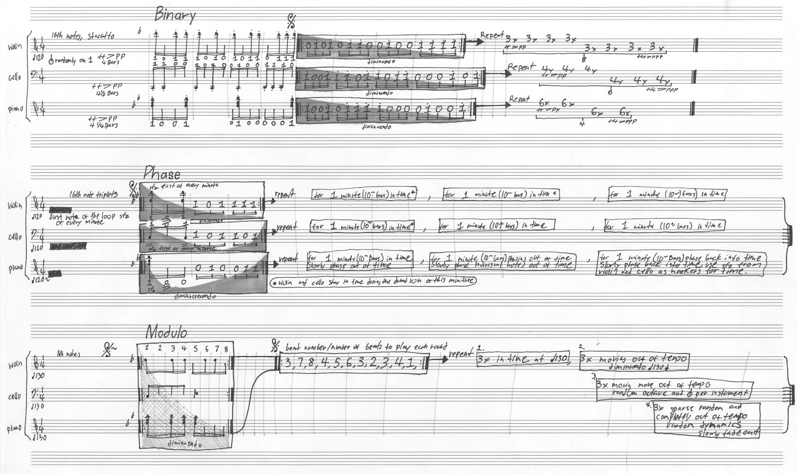

Four Bit Modulo Phase Triplex for Violin, Piano and Cello.



This score is based off of binary information generated by randomly sampling values of noise from a recording I made of the environment of a highway underpass at 41 814011, 71 406527 in Providence, RI Each 1 in the score represents playing a 16th note or chord, preset at the beginning of the movement, while each 0 represents a rest. In the first movement the first 4 bars are a notated representation of playing notes on 1s and resting on 0s. The next 4 bars for violin is a loop, that is to be played 24 times. Within the loop, the grey envelope overlay is a visual representation of dynamics. In the first 12 loops this dynamic is a representation of ff > pp, and in the next 12 loops from fff > ppp. These rules are the same for piano and cello, however the length of the piano loop is 4 and 1/4th bars long, and the length of the cello loop is 4 and 1/2 bars long. These loops will most likely end at different times. The violin is notated as 8 sets of 3 loops to make up 24, the piano is notated as 4 sets of 6 loops each to make up 24 and the cello is notated as 6 sections of 4 loops each to make up 24 loops. Although these loops will phase in and out of each-other because of their varying loop length and dynamics per instrument, all instruments are to play 16th notes for this section and keep in time with 120 bpm. It is also stated in this movement that all on notes (1s) are staccato and for cello and violin to use snap pizzicato randomly, preferably towards the beginning of the loop when the volume of the particular instrument is high. In the second movement, the tempo stays at 120, the 16th notes are now in triplets, and then tempo only changes for the piano. There’s a new set of preset notes notated at the beginning of the loops. Snap pizzicatos are not random (if they are too close in succession you can remove the second one from each bar. The first note of these loops are to be played sfz for violin and cello as a timing indicator for the piano when it phases out of time. For roughly the first minute (10 bars) of looping every instrument is to stay in time with 120. Towards the second minute the piano slows starts to phase out of time, slowly separate the individual notes the piano is playing, and decrescendo in volume. Towards the end of the movement the piano is to slowly phase notes and tempo back into time and crescendo in volume to fff and all instruments should be in tempo again by the last 20 seconds of the movement. Violin and cello should crescendo from mf to fff over the entire course of the 3 minute movement. In the third movement the tempo is now 130, and all notes are 16th notes. This movement stays in tempo for the beginning and over time each instrument moves out of tempo, octave and volume randomly, all instruments are in one loop and the loop length changes. The cello only plays one note in the loop at the beginning and it is to be played sfz. The numbers refer to beats long. The first loop is 3 beats long, then 7, then 8, then 4 etc. after the instruments play this set of loops they are to repeat it 3 times in tempo, 3 times slowly moving out of tempo, 3 times moving out of tempo volume and octave with random pizzicato for cello and violin, and then deviate/disintegrate/fall apart for the end of the movement.